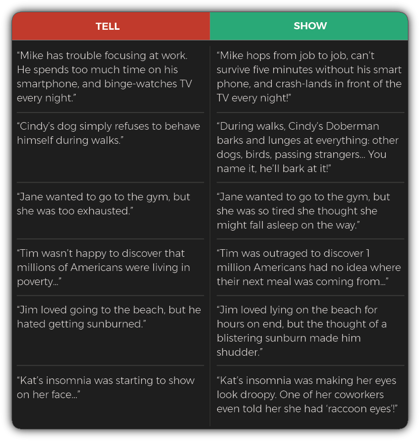
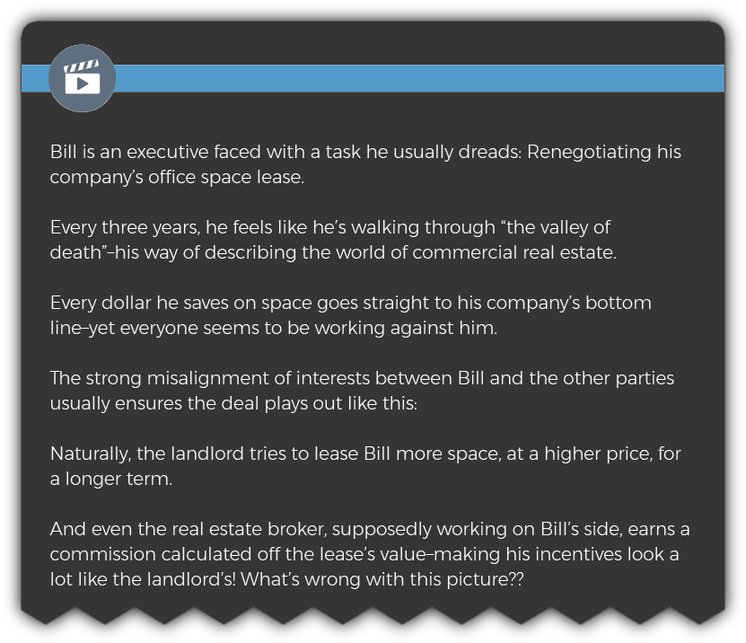

Welcome to Module 4. This week, you’ll learn:
An explainer video is a short animated video designed to get viewers to take some sort of ACTION. It could be buying a product, booking an appointment, downloading a white paper, calling for a free consult, or anything else.
Explainer videos can go by many different names, including whiteboard video, animated video, homepage video, marketing video, and more.
Don’t get too hung up on the terminology or format… If someone wants a short animated video, you’ll be able to use what you learn in this module to help them.
Writing explainer videos comes with a lot of benefits :
In this module, you’ll learn exactly how to write an effective explainer video script for any situation.
Years ago, explainer videos were used almost exclusively by businesses as a quick, easy way to break down complicated, confusing, or technical products or ideas.
But as explainer videos have skyrocketed in popularity, it’s become fashionable for any business to have an explainer video — even if they don’t have anything new, complicated, or unfamiliar to actually explain.
Today organizations big and small use them to market anything from food products, to muffler repair, dentistry, training courses, live events, charities, and much much more. Like this one — from a financial planner:
Regardless what type of business (or nonprofit) you’re writing for, a great explainer video is more like a mini-movie than an instruction manual. Your primary job is to connect with viewers on an emotional level.
Yes, your video scripts can and will explain your client’s product or service. But it’s the emotional triggers that grab viewers’ interest, keep them engaged, and even get them to act.
This idea of tapping into emotions — rather than relying on logic — is something you’ll find useful throughout all forms of copywriting. And it has special importance to explainer videos.
To understand why, think about how you feel when you start playing an online video:
Yes, you probably want to learn something, but you also expect to be entertained!
You don’t need to be the second coming of Chris Rock in order to pull this off when you’re writing an explainer video script. I’ll show you how anyone can do it.
Let’s discuss the first step…
Structuring your script properly is the best way to set yourself up for success, before you even write a single word.
It’s like having a recipe when you sit down to cook — it makes things easier and ensures you’ll end up with a delicious meal.
There are 6 main “ingredients” you’ll usually be working with when you write an explainer video script:
The first part of every explainer video. You simply create a character and give him/her a problem they need to solve.
This is where you “raise the stakes” for your character. You can make the problem more “real” by going into more detail; pile on additional “second order” problems; or even talk about all the bad stuff that will happen if the character fails to solve the problem.
Now it’s time to give some hope to your character — as well as some love to your client — by introducing their product/service into the mix. This is the solution that will ultimately help your character solve their problem and give him or her a happy ending.
This is why they call it an explainer video; here you’ll elaborate on the solution so viewers understand exactly how it works, how it can help them solve THEIR problem in real life.
This will typically be the #1 objection or frequently asked question people have about the product/service you’re showcasing in the video. (This is the least common of all the ingredients, but it can come in handy when you need it.)
This is where you tell viewers what to do next. It can be checking out a link, downloading a white paper, calling for more information, or anything else your client wants viewers to do after watching the video.
You won’t always use all of these ingredients. Which ones you decide to use, and how much space you devote to each one, will depend upon a number of variables, including:
Here’s an example of a 2-minute (~300 word) script where I used all of the 6 ingredients above:
Keep in mind the number of words you devote to each ingredient can vary from script to script depending on the length of the video, the client’s preferences, the topic you’re writing about, and more.
For example, did you notice how the call to action in the script above is a bit “light?”
The client wanted a 2-minute (~300-word) script, so I had to make some judgment calls. In this case, we’re asking them to sign up to a free service — so I decided to spend more time telling a good story about the value of the service, while using a few less words on the call to action itself. (I explained this to the client when I delivered my first draft, and he loved it.
Next, let’s look at an example of a shorter script where I used fewer ingredients:
If you look closely, you’ll see I didn’t explicitly mention or overcome any specific objections. And I was more brief in my explanations of the problem and solution.
Why? For one thing, this video was only half the length of the previous one, so there wasn’t room to go into as many details.Nor were as many details needed for this script! The technical details of how the product works aren’t as important because people already understand what a “workbook” is. It was more important to focus on the emotional aspects of explaining who the product is for, and how it can HELP THEM.
Would it have been wrong to devote a bit more room to explaining the product, while “skimping” a little on one or more of the other sections? Not at all. This is more art than science! The most important thing to do is use your judgment — if you’re working strategically, and the client is happy, you’re doing something right.
In a moment, we’ll dive into exactly how to write an explainer video script for any situation.
First, let’s go over my 3 rules for writing awesome explainer video copy.
People can’t relate to products or services — at least not directly.
But they relate incredibly well to other people.
That’s why Kim Kardashian can instantly turn an ordinary product into a hot new trend with a single tweet:
Of course, your scripts aren’t likely to feature many celebrities. But they will feature another one of your viewer’s favorite VIPs: THEMSELVES!
No, they won’t literally see themselves featured in your video… Instead, you’ll create a character — like Joe, or Jane — and give them all of the same problems, challenges, fears, reservations, hopes, and dreams as the person watching the video.
Watch this video below to see how I create great characters quickly and easily:
Imagine someone planning for retirement watching this story unfold. They can’t help but relate to it…because it’s their story! The more the viewer sees themselves in the video, the more successful your script will be.
Here are a few more examples of showing vs. telling sentences:

When you’re writing the first draft of your script, it’s OK to start out with some “telling” sentences. But by the time you go back to edit (preferably the next day, or at least a few hours later) you should make a conscious effort to go from telling to showing.
People love drama. Learning how to create drama is one of the hallmarks of a great script writer.
Imagine hearing someone say that “Jim hasn’t been sleeping well.” It definitely sounds like a nuisance, but there’s nothing particularly DRAMATIC about it.
Watch the video below to learn 2 quick and easy ways to beef up the drama in an explainer video.
Here are more examples of how I use the “degree” and “contrast” dials to turn low drama sentences into high drama sentences:
Remember, you don’t need to pack every sentence with the maximum amount of drama. And you don’t want to overdo it, either. But as a general rule most of the explainer video scripts I’ve read can easily use an extra dose — or two — of drama.
A good explainer video script starts out by telling the viewer’s STORY — as authentically as possible.
You don’t want or need to go into every detail of their life. The key is to understand their problem — whatever it is they need to accomplish — in a way that feels “real” to them.
At a minimum, after watching the opening of your video, the viewer needs to:
Let’s take a closer look at the “problem” portion of one of the scripts I showed you earlier:
Imagine if all I’d known about the viewer was that they were a restaurant owner whose commercial fridge had gone out. What would my options have been? I could have either given that bare description of the problem, or make up something to use as “filler.”
Either way, the story would feel totally flat to the real restaurant owners watching it.
Instead, look at the extra details that make this story feel authentic to them:
This is the kind of stuff you can’t just make up — and viewers know it. This gives it an authentic feel that signals to them that your client is an expert who can help them solve their problem. (In the bonus section of this module, I’ll give you an enormous treasure trove of juicy questions to help you uncover all of these details, and more.)
Let’s look at another example. This one is a bit longer — it’s from a 3-minute (~450-word) script targeting private-practice physicians:
Notice how I don’t just INTRODUCE the problem — look at all the ways I EXPAND on it too:
If this looks intimidating, it shouldn’t be — the client gave me all of this info! I just put it into a neat little story and gave it right back to them.
Nor do you necessarily need all of these details in order to write about the problem in an authentic way. Check out this very short opening from a 1-minute (~150-word) script I wrote for a day spa business:
In this case, it’s the little details like “she feels guilty any time she spends money on herself” that brings this story to life.
Let’s look at a few more examples…

One final note before we move on to the next section:
For the first draft of your script, don’t worry about how much space to devote to the “problem.”
For now, just write down everything you know about it (which usually means everything the client has told you about it). Later, I’ll show you how figure out if you need to shorten it — as well as how to do it quickly and painlessly.
Once you’ve done everything you can to showcase the problem the viewer wants to solve, it’s time to introduce — and explain — the solution.
This part of your script is going to be mainly about the client and the product or service they’re offering.
You’ll explain exactly how it works, in a logical, step-by-step fashion.
But make sure you don’t lose sight of the most important person: The viewer!
You need to make sure you tie the solution back to THEIR needs. How it helps them solve THEIR problem. Let’s take a closer look at the “solution” portion of the first script I showed you at the beginning of this lesson:
Notice how, even though I explained the ins-and-outs of how the service works, I never took the focus off of the viewer — and how it made HIS life better.
Sometimes a product or service offers LOTS of benefits to the viewer. In that case, the client will probably want a script that’s a bit longer, so you can pack it with benefits.
Check out this “solution” portion of a 3-minute (~450-word) script — notice how many benefits I was able to pack it with:
Sometimes, a solution doesn’t need much technical explanation. For example, if your video is meant to promote, say, a free report, everyone already knows how a free report works! In that case, instead of “explaining” the free report, you can make a bulleted list of all the things the viewer will learn from it.
Take a look at an example of how I did this in a script meant to promote a book:
You can use this same “What will the viewer get out of it?” strategy for any type of product or service where a technical explanation isn’t required.
Here’s another example — this one is from a video I wrote for a home maintenance company:
In this case, the company didn’t do anything special in the technical sense — so we listed out their services and tied the overall offer to a nice benefit for the viewer.
An explainer video can be fun and entertaining, but make no mistake about it — it’s a powerful marketing tool intended to get viewers to take ACTION.
The key is to give them something specific to DO. This can be a special offer, or, at the very least, a simple, straightforward NEXT STEP.
Make it clear not only what you want them to do, but WHY they should do it. Take a look at how I did this in the example below (notice how, in addition to giving them a clear call to action, I strengthened it by giving them lots of reasons to take the next step):
It can be tempting to wrap things up with a “Plain Jane” call to action. But, whenever possible, it’s worth it to take a couple of extra minutes to dress it up a bit. You can even help your client craft a more urgent call to action, like I did in the following example:
Another technique you can use is to call out a specific group of people who should take the next step. This works great for situations where you’re not able to write a longer/stronger call to action:
You can also use this approach more generally, like this:
…or this:
Unlike emails, press releases, and other types of copywriting, explainer video clients usually need their script to contain a specific number of words. That’s because they’ve generally already decided on how long their video should be — your job is to write the number of words that fits that predetermined length.
As a rule of thumb, 150 words equals about one minute of finished video. So if a client needs a 2-minute video, you’ll write 300 words…and so on. (There’s a little bit of wiggle room — you can usually squeeze in up to 175 words per minute if you need to, though it’s not ideal.)
Once you’ve written the first draft of your script, your next step is to check the word count to see how closely it matches up with what the client needs.
Most likely, you’ll either have too many words — or too few. This is perfectly normal, and I’ll show you my favorite quick fixes for dealing with either scenario.
If your client gives you a lot of info to work with, or you’re writing about a complicated topic, your first draft may end up longer than expected.
There are several ways to cut down your script when that happens. You may not need to do all of these — start with the least drastic ones first, and move down the list if you need to.
If your first draft falls short of the target word count, no worries. There are plenty of ways to get it up to the right count, without sacrificing an ounce of quality.
In fact, if you play your cards right you can even make your script better and longer at the same time.
The key is to start with lots of good information. You’ll find tons of juicy questions to ask explainer video clients in the bonus section — here’s how you can use it to beef up your script’s word count:
(Note that I’m not looking for one-word answers like “shame,” but a SPECIFIC and DETAILED answer like “Jane is worried about how she might appear to her bosses if she tries to negotiate her salary. She’s afraid she’ll come across as overly aggressive, ungrateful, or even ‘unladylike’.”)